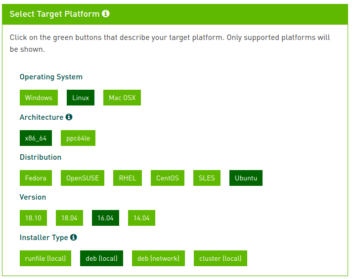

MAVs Documentation
This software simulates an autonomous vehicle within a ROS environment.
Features
- nonlinear model predictive control through NLOptControl.jl
- lidar simulation through Gazebo
- vehicle model through Chrono
Installation Instructions
These instructions depend on your machine's configuration.
Step 1, Install Docker
Remove any old versions of docker if they are on your machine:
sudo apt-get remove docker docker-engine docker.ioUpdate the apt package index:
sudo apt-get updateInstall the packages to allow apt to use a repository through HTTPS:
sudo apt-get install \
apt-transport-https \
ca-certificates \
curl \
software-properties-commonAdd the official GPG key of Docker:
curl -fsSL https://download.docker.com/linux/ubuntu/gpg | sudo apt-key add -Verify that the command below print out 9DC8 5822 9FC7 DD38 854A E2D8 8D81 803C 0EBF CD88:
sudo apt-key fingerprint 0EBFCD88Tell apt to use the stable repository by running the command below:
sudo add-apt-repository \
"deb [arch=amd64] https://download.docker.com/linux/ubuntu \
$(lsb_release -cs) \
stable"Update the apt package index and install Docker CE:
sudo apt-get update && apt-get install docker-ceCheck installation of docker:
docker run hello-world{kind=link}
Step 2, Update NVIDIA Driver
Use the CUDA 10.1 Toolkit to install CUDA. An example of using this toolkit follows.


After the download is complete, cd into your $~\Downloads$ folder and follow the installation instructions provided by the toolkit to install CUDA:
sudo dpkg -i $HOME/Downloads/cuda-repo-ubuntu1604-10-1-local-10.1.105-418.39_1.0-1_amd64.deb
sudo apt-key add /var/cuda-repo-<version>/7fa2af80.pub
sudo apt-get update
sudo apt-get install cudaNote: After you follow the first instruction, the <version> in the second instruction will be provided. For instance, in this example:
$HOME/Downloads/cuda-repo-ubuntu1604-10-1-local-10.1.105-418.39_1.0-1_amd64.debProduces:
Selecting previously unselected package cuda-repo-ubuntu1604-10-1-local-10.1.105-418.39.
(Reading database ... 551128 files and directories currently installed.)
Preparing to unpack .../cuda-repo-ubuntu1604-10-1-local-10.1.105-418.39_1.0-1_amd64.deb ...
Unpacking cuda-repo-ubuntu1604-10-1-local-10.1.105-418.39 (1.0-1) ...
Setting up cuda-repo-ubuntu1604-10-1-local-10.1.105-418.39 (1.0-1) ...
The public CUDA GPG key does not appear to be installed.
To install the key, run this command:
sudo apt-key add /var/cuda-repo-10-1-local-10.1.105-418.39/7fa2af80.pubThus add the key as instructed, before proceeding with the final instructions.
Reboot your computer and verify that the NVIDIA graphics driver can be loaded
Step 3, Install NVIDIA-docker
If installed, remove NVIDIA docker 1.0:
docker volume ls -q -f driver=nvidia-docker | xargs -r -I{} -n1 docker ps -q -a -f volume={} | xargs -r docker rm -f
sudo apt-get purge -y nvidia-dockerAdd the necessary repositories and update the apt package index:
curl -s -L https://nvidia.github.io/nvidia-docker/gpgkey | \
sudo apt-key add -
curl -s -L https://nvidia.github.io/nvidia-docker/ubuntu16.04/amd64/nvidia-docker.list | \
sudo tee /etc/apt/sources.list.d/nvidia-docker.list
sudo apt-get updateInstall NVIDIA docker:
sudo apt-get install -y nvidia-docker2
sudo pkill -SIGHUP dockerdTest NVIDIA docker installation:
docker run --runtime=nvidia --rm nvidia/cuda nvidia-smi{kind=link}
Step 4, Install MAVs
Make a directory to store MAVs in, e.g., $$HOME/Documents/workspace/MAVs$. cd into that directory.
Clone the
developbranch of the repository
git clone -b develop https://github.com/JuliaMPC/MAVs- Build image
sh build.sh- Test MAVs
First start Docker container in the MAVs folder:
./run.shThen, the most basic usage of MAVs is simply running the demos. For instance, demoA can be run as:
$roslaunch system demoA.launch{kind=link}
Potential Issue, NVIDIA driver is too old for CUDA 10
If you try to run the test:
$ docker run --runtime=nvidia --rm nvidia/cuda nvidia-smiAnd get this error:
Unable to find image 'nvidia/cuda:latest' locally
latest: Pulling from nvidia/cuda
898c46f3b1a1: Pull complete
63366dfa0a50: Pull complete
041d4cd74a92: Pull complete
6e1bee0f8701: Pull complete
131dbe7c254d: Pull complete
5bca6b05dcd6: Pull complete
0d286a7b6e12: Pull complete
5776d2c6371d: Pull complete
768e84e7fc24: Pull complete
Digest: sha256:eba1dc5810e40f60625ee797d618a6bd11be24cb67bc6647a4d36392202bb013
Status: Downloaded newer image for nvidia/cuda:latest
docker: Error response from daemon: OCI runtime create failed: container_linux.go:345: starting container process caused "process_linux.go:424: container init caused \"process_linux.go:407: running prestart hook 1 caused \\\"error running hook: exit status 1, stdout: , stderr: exec command: [/usr/bin/nvidia-container-cli --load-kmods configure --ldconfig=@/sbin/ldconfig.real --device=all --compute --utility --require=cuda>=10.1 brand=tesla,driver>=384,driver<385 brand=tesla,driver>=410,driver<411 --pid=25518 /var/lib/docker/overlay2/daf8349b9ffd92c040ff872e037e3afa56b93a5abeb6f2406e42fa596a88facf/merged]\\\\nnvidia-container-cli: requirement error: unsatisfied condition: brand = tesla\\\\n\\\"\"": unknown.Did you follow Step 2?
Because it is likely that your nvidia driver is too old to support CUDA 10 see NVidia's compatibility table.
To check your NVIDIA driver version:
$ nvidia-smiSun Apr 14 09:10:14 2019
+-----------------------------------------------------------------------------+
| NVIDIA-SMI 384.130 Driver Version: 384.130 |
|-------------------------------+----------------------+----------------------+
| GPU Name Persistence-M| Bus-Id Disp.A | Volatile Uncorr. ECC |
| Fan Temp Perf Pwr:Usage/Cap| Memory-Usage | GPU-Util Compute M. |
|===============================+======================+======================|
| 0 Quadro K2200M Off | 00000000:01:00.0 On | N/A |
| N/A 45C P8 N/A / N/A | 437MiB / 1999MiB | 1% Default |
+-------------------------------+----------------------+----------------------+
+-----------------------------------------------------------------------------+
| Processes: GPU Memory |
| GPU PID Type Process name Usage |
|=============================================================================|
| 0 1385 G /usr/lib/xorg/Xorg 189MiB |
| 0 2693 G compiz 86MiB |
| 0 3162 G ...-token=8169387D71BE805A200B4A3744EC138E 94MiB |
| 0 6728 G ...passed-by-fd --v8-snapshot-passed-by-fd 62MiB |
+-----------------------------------------------------------------------------+If that's the case, you can either use one of the numbered 1.12 tags or upgrade your device driver to a version that supports CUDA 10. Try using using the CUDA 10.1 Toolkit to install CUDA (i.e., Step 2)
Citation
If you find NLOptControl.jl useful, please cite it:
@software{nlopt,
author = {{Huckleberry Febbo}},
title = {NLOptControl.jl},
url = {https://github.com/JuliaMPC/NLOptControl.jl},
version = {0.0.1},
date = {2017-06-17},
}If you find VehicleModels.jl useful, please cite this paper:
@Conference{Febbo2017,
author = {Huckleberry Febbo, Jiechao Liu, Paramsothy Jayakumar, Jeffrey L. Stein, Tulga Ersal},
title = {Moving Obstacle Avoidance for Large, High-Speed Autonomous Ground Vehicles},
year = {2017},
publisher = {IEEE}
}